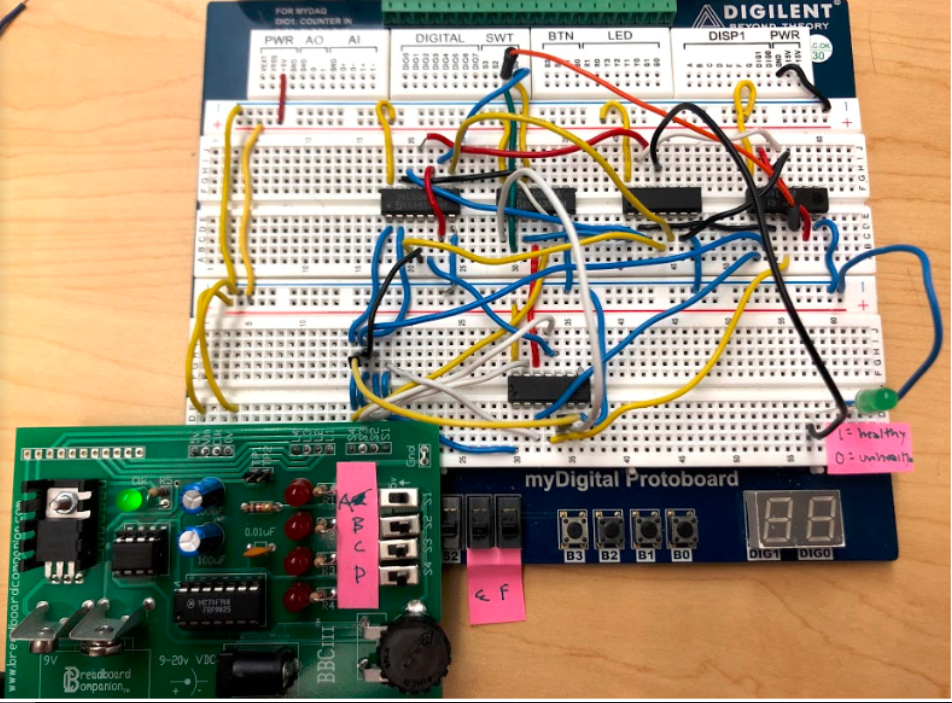

ISAIAH CRUZ
Project: Scratch Game
Dates: 9/15/15 - 10/3/15
Program: Scratch
App Page(containing code and project): App
Course: Computer Science/Software Engineering 2015 - 2016
I was assigned to program a game with my partner Mounica Padakandla. We were required to use the online game creator Scratch to make any kind of user-interactive game. This project was made and done towards the start of freshman year, in October. Scratch helped us understand programming language/logic, and also let us have fun and be able to share our work. We let others comment on the game we made, which was an RPG(role-playing game). The idea for the game was to combine RPG elements and quizzes. Our idea allowed us to combine both lists, transitions, and traveling distances of animations. This project taught us the importance of adding comments to our code, which would have helped us understand our code more easily.
Project: MIT App Inventor Game
Dates: 12/6/15 - 1/7/16
Program: MIT App Inventor 2
Course: Computer Science/Software Engineering 2015 - 2016
The next project in freshman year was assigned to be developed with MIT App Inventor, and my partner was Mark Kong. MIT App Inventor is an app developer similar to Scratch, but this time we had learned from our previous failures with comments. We were required to take open-source code and modify it to make a better game. Our app had encountered unknown packaging errors, which kept us from running the app that wasn't hardlined. The app we made was a multiple choice quiz, which required us to use lists and indexes to call functions. The two central functions that we used were nextQuestion and GameOver, and their names explain themselves. Each of them required us to use many indexes and lists.
Project: Text Adventure
Dates: 2/9/16 - 3/7/2016
Program: Python 2.7
Course: Computer Science/Software Engineering 2015 - 2016
Project Page(contains code and project log): Document
This project was developed in Python 2.7, a language we used to develop a text adventure. A text adventure is literally an adventure in text, where the decisions you make from inputting input into different raw_input()s. In Canopy, we developed a code file to host our adventure. This project tested our knowledge of loops and conditionals, and was an extension of our printing abilities and logic. Our code looked like one huge function for running ease, with many other functions inside it to act in branching. The theme of our code was about Mr.Brown and a few of the other different teachers in the J Building at DHS. Overall, this project did not throw us many difficulties, but was a very fun way to learn coding and get better in coding in Python.
Project: 2016 DEDA Entrepreneurship
Dates: 5/13/16 - 5/30/16
Programs: HTML, Robot C
Course: Computer Science/Software Engineering 2015 - 2016
Project Folder(includes our presenation, documents used for project): Folder
As the Computer Science/Software Engineering course came to a close, we were assigned a project where we were assigned to creat a solution to any problem in society. For our project, we decided to try and lower water usage on the farm. To do this, we created a robot, titled IrriBot(irrigation bot). The concept of the automated robot would include water- and energy- efficient irrigation. Our proof-of-concept included sensors and the robot's basic steel frame. The robot would be programmed to move forward, with the sensors on a side "sensing" a plant, and the robot would lower a standoff that held a tube connected to a water source in place. Future improvements would include even more sensors and other water openings, which would include solenoid valves for more water efficiency. In this project, I developed the website for the robot's advertisement and was a large part of the documentation.
Project: Solar Cell / Hydrogen Fuel Cell Car
Development Cycle: 11/1/16 - 11/17/16
Course: Principles of Engineering 2016 - 2017
Project Folder(contains project documentation and images): Folder
For this project, our test was to design a prototype of a vehicle that would either use hydrogen fuel cells or solar modules as its main and only power source. The project then required us to conduct measurements for power, time, and efficiency. To connect either the solar modules or fuel cells to the car, a breadboard was used to provide power input to the car's motor. Voltage and current readings were conducted on the breadboard or the power source. After each calculation and measurement for power and efficiency, we were required to report a recommended power source for our client, Tesla Motors. In the end, our team proposed solar panels as the best power source, in comparison to hydrogen fuel cells.
The power configuration in this picture was the two-solar-cell configuration. It turned out to also be the most efficient out of the four configurations. The ones that we tested were one solar panel, two solar panels, one hydrogen cell, and two hydrogen cells. The least efficient and least powerful configurations were the hydrogen cells, and the most efficient and powerful were the solar modules.
Project: 2017 DEDA Entrepreneurship
Dates: 5/02/16 - 5/22/16
Programs: HTML, Robot C
Course: Principles of Engineering 2016 - 2017
Project Folder(includes our presenation, documents used for project): Folder
The 2017 DEDA Entrepreneur Project routine followed was nearly the same as the 2016 Entrepreneurship Project. The project, again, was open-ended and we were tasked with solving any problem in the world today. The problem we chose to solve was the overacidifaction of soil due to pollutants in rain and air. Prior solutions that attempted to solve this problem was soil liming, where calcium carbonate solution is either manually dispersed by a person or mass-distributed by a vehicle. Both of these have their own negative effects, as human labor may lose money for a company and take too much time, and machine-dispersed lime solution is cost-inefficient and imprecise. Our solution, pHbot, aimed to solve both of the problems of humans and tractors, and provide farmers with a cost-efficient opportunity to optimalize the crop yield on their farms. In this project, I worked with Ashley Chon and Ethan Tai, who are two other students (as of May 2017) that are also taking Principles of Engineering. The contributions that I made to the project were the development of the project website, robot construction, and research conduction.
Project 2.1.6: Nutrition Counselor
Dates: November 28, 2018 - December 6, 2018
Programs: Multisim 14.1
Course: Digital Electronics 2018-2019
Project Folder(includes our presenation, documentation, and pictures of project): Folder
In Digital Electronics, we were tasked with creating a circuit implementing our newfound experience of the circuit design process, boolean algebra, and logic expression simplification. To finish this task, a team member and I decided to work together and create our own circuit. The circuit required a total of six inputs (buttons or switches) to create an end result since we were a team of two.
Therefore, we decided to design and test a prototype nutritional counselor that uses different aspects of AOI Logic. Based on the food groups a customer says he/she is eating, they can use this system to see if they have eaten healthily. One person will be able to input the different food groups they have eaten in a day into our nutritional counselor, and if a minimum of three of the healthy food groups have been consumed (healthy fats, meats, dairy, fruits/vegetables, and grains/carbohydrates), they have eaten healthy. However, if sugar-/fat- high foods have been eaten with healthy fats, we cannot say that they have eaten healthy since they may easily exceed their body's fat consumption limit.
As the project manager, my responsibilities were to manage the time spent on each subtask in our project, whether it was documentation updating or making sure that our project was being completed in a timely manner. Since we were a team of two, it was not always easy to physically work on the breadboard of the project together since both of us could not physically touch it at the same time, handle it at the same time, or bring it home at the same time. Therefore, I was limited to working on documentation updates, truth table management, and simplification of our logic expression. However, both of us were able to work together on torubleshooting our project and create the original project idea.